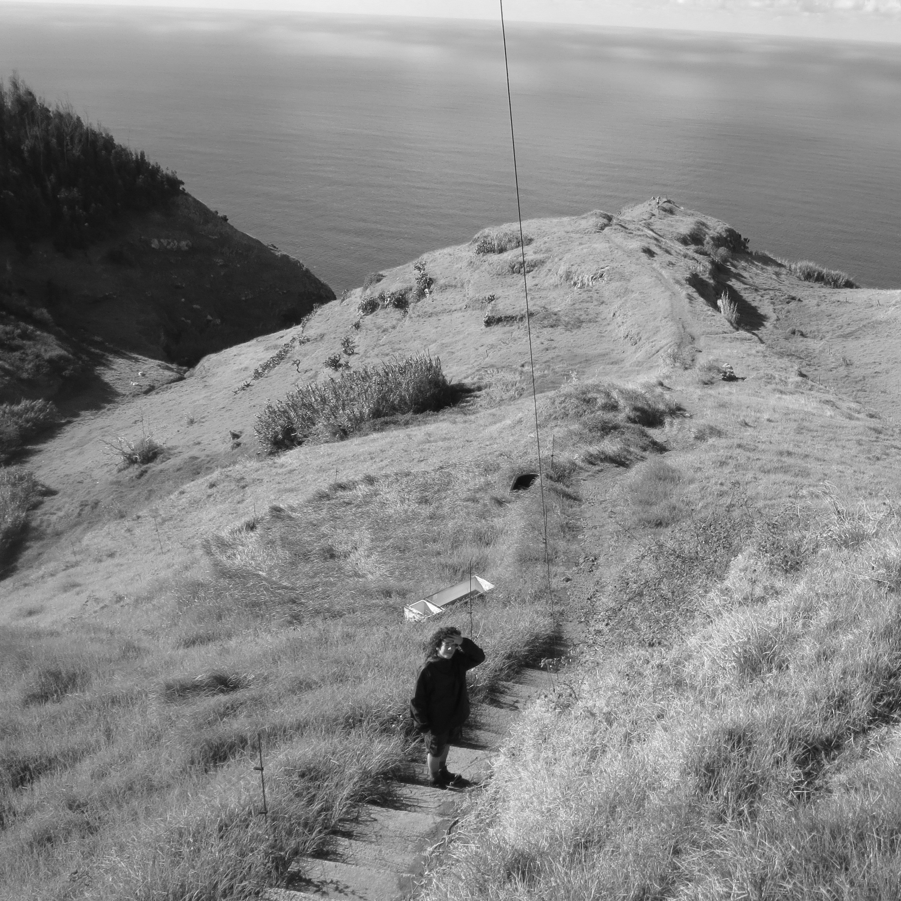
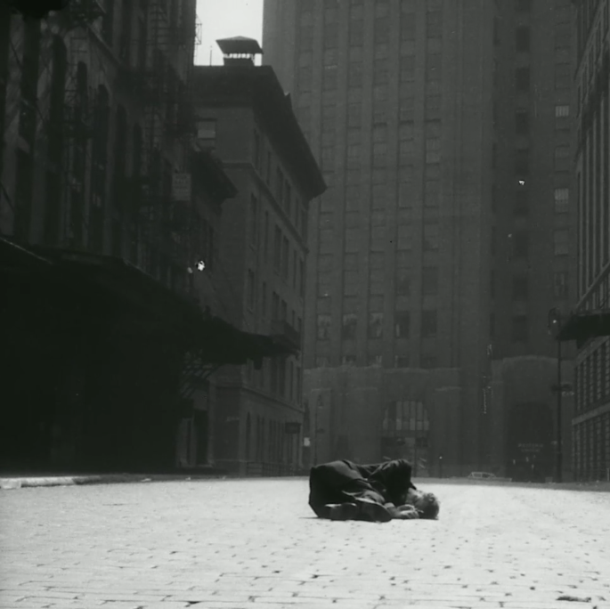

Desmarques
Rotten \ Fresh
rotten / trash
rsti
rsti *
zst
rf
thna
ntno
Alförjs
dSCi
ATR
renas
c.uglyglow
r/c/bboy
r/c/bboy *
pvl
g
leio
usof
Ab
Cafetra
Putas Bêbadas
Don Caballero - What Burns Never Returns
stbttlco
Ganger
Lemur
Polvo
Pupille
Ricaine
Piglet
Empire! Empire! (I Was A Lonely Estate) live
Empire! Empire! (I Was A Lonely Estate)
Junior Bob
Cap'n Jazz
Dilute
Storm & Stress
U.S. Maple
Wayne Krantz and Mark Guiliana
Mica - Guts
Mica - Curly Teeth
Ongia
Shellac
Tortoise
Low - Lazy
공중도둑 (Mid Air Thief) over Takashi Ito
Son de la Frontera
Son de la Frontera - Cambiaron los Tiempos
Son de la Frontera <3
Paco
Andrea Belfi
Andrea Belfi - WEGE B
Microstoria
Frusciante
Un Blonde
Ballaké Sissoko and Vincent Segal
Jakob Bro Trio - Evening Song
Bill Frisell and Thomas Morgan - Small Town
Owen Gardner
Marisa Anderson
more Marisa Anderson
Colin Vallon Trio - Telepathy
Colin Vallon Trio - Cendre
Colin Vallon Trio live at Schaffhauser
Vijay Iyer Trio - Taking Flight (from Break Stuff)
Dejan Ivanovich plays Koyunbaba IV movement
Prizes
Good Game
Joe Talia and Oren Ambarchi
KYO - Potentiel Musik
Sam Kidel - Disruptive Muzak
If I don't let myself be happy now then when?
i am so happy that we were in the same place at the same time
Love What Happened Here
TERRINE
Laddio Bolocko
Idylls - Prayer for Terrene
Idylls
Belle Epoque
Unwound - Future of What
Daïtro
Anomie
sufta

